Notation
- We have set of \(P = \{1, ..., p\}\) players
- For each coalition, i.e. subset \(S \subseteq P\) we can calculate the payout \(v(S)\) and \(v(\{\varnothing\}) = 0\)
- We want to fairly distribute the payout \(v(P)\)
- Optimal attribution for player \(i\in P\) will be denoted as \(\phi_i\)
Motivational example 1/3
How to divide the reward?
- Three parties A, B and C took part in the election.
- As a result of the election, parties A and B each have 49% representation in the parliament and party C has 2% representation.
- Let’s assume that A and C formed a government.
- How to fairly divide the prize (ministries)?
- What share of the prize should party C have?
Note that any two parties can form a government. In that case, should the prize for C be equal to or less than that for A?

Motivational example 2/3
Students A, B and C carry out a project together. With this payoff table, determine what portion of the award each student should get.

Motivational example 2/3 cont.
Students A, B and C carry out a project together. With this payoff table, determine what portion of the award each student should get.

Motivational example 3/3
Students A, B and C carry out a project together. With this payoff table, determine what portion of the award each student should get.
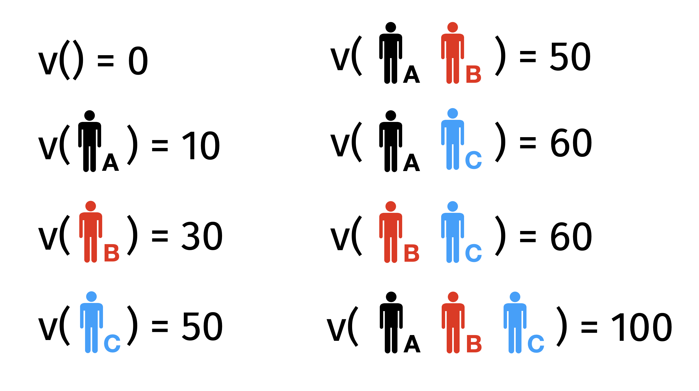
Motivational example 3/3 cont.
Students A, B and C carry out a project together. With this payoff table, determine what portion of the award each student should get.

Required properties of fair payout
One can define various desirable properties of fair reward distribution. The following seem to be natural (or at least they were for Lord Shapley).
- Efficiency: all contributions sum up to the final reward
\[
\sum_j \phi_j = v(P)
\]
- Symmetry: if players \(i\) and \(j\) contributed in the same way to each coalition then they get the same reward
\[
\forall_S v(S \cup \{i\}) = v(S \cup \{j\}) \Rightarrow \phi_i = \phi_j
\]
- Dummy: if player \(i\) does not contribute then its reward is \(0\)
\[
\forall_S v(S \cup \{i\}) = v(S) \Rightarrow \phi_i = 0
\]
- Additivity: reward in sum of games \(v_1\) and \(v_2\) is sum of rewards
\[
\forall_S v(S) = v_1(S) + v_2(S) \Rightarrow \phi_i = \phi_{1,i} + \phi_{2,i}
\]
Shapley values (via permutations)
- Fair reward sharing strategy for player \(j\in P\) will be denoted as \(\phi_j\). Surprise, these are Shapley values.
- Note that added value of player \(j\) to coalition \(S\) is \(v(S \cup \{j\}) - v(S)\)
- Shapley values are defined as
\[
\phi_j = \frac{1}{|P|!} \sum_{\pi \in \Pi} (v(S_j^\pi \cup \{j\}) - v(S_j^\pi))
\]
where \(\Pi\) is a set of all possible permutations of players \(P\) while \(S_j^\pi\) is a set of players that are before player \(j\) in permutation \(\pi\).
- Instead of trying all \(\Pi\) permutations one can use only \(B\) random permutations to estimate \(\phi_j\)
\[
\hat\phi_j = \frac{1}{|B|} \sum_{\pi \in B} (v(S_j^\pi \cup \{j\}) - v(S_j^\pi))
\]
Shapley values (via subsets)

- Once you have a given set \(S_j^\pi\) of players that are before \(j\) in a permutation \(\pi\), then the added value of \(j\) is the same for all permutations that starts with \(S_j^\pi\). There is \((|P| - |S_j^\pi| - 1)!\) of such permutations.
- Also the order of players in \(S_j^\pi\) does not matter as the added value of \(j\) is the same for all permutations of \(S_j^\pi\). There is \(|S_j^\pi|!\) of such orders.
- Formula for Shapley values can be rewritten in a following way
\[
\phi_j = \sum_{S \subseteq P / \{j\}} \frac{|S|! (|P| - |S| - 1)!}{|P|!} (v(S \cup \{j\}) - v(S))
\]
- The advantage is summing over subsets, of which there are \(2^p\) instead of permutations, of which there are \(p!\).
Motivational example 3/3 solution
Students A, B and C carry out a project together. With this payoff table, determine what portion of the award each student should get.
- Now we can calculate the Shapley values and they will be a fair distribution of the reward between students A, B and C
\[
\phi_{A} = \frac{1}{6} (10*2 + 20 + 10 + 40*2) = 21 \frac 23
\]
\[
\phi_{B} = \frac{1}{6} (30*2 + 40 + 10 + 40*2) = 31 \frac 23
\]
\[
\phi_{C} = \frac{1}{6} (50*2 + 50 + 30 + 50*2) = 46 \frac 23
\]
Shapley values for Machine Learning Models
Definitions
Let’s start with local explanations, focused on single point \(x\) and the model prediction \(f(x)\).
Now instead of players, you can think about variables. We will distribute a reward between variables to recognize their contribution to the model prediction \(f(x)\).
Reward to be distributed among players:
\[
f(x) - E f(x)
\]
- Payoff value function for coalition \(S\)
\[
v(S) = f_S(x_S) - E f(x)
\] where \(f_S(x_S)\) is the model prediction maginalized over \(P/S\) variables, i.e. \[
f_S(x_S) = \int_{X_{-S}} f(x_S, X_{-S}) dP(X_{-S})
\]
- Shapley values via permutations
\[
\phi_j = \frac{1}{|P|!} \sum_{\pi \in \Pi} v(S_j^\pi \cup \{j\}) - v(S_j^\pi)
\]
Note: \(|P|!\) grows quite fast. \(10! = 3 628 800\). Good news: instead of checking all permutations, one can focus on random \(M\) permutations. Also calculation of \(f_S(x_S)\) may be computationally heavy for large datasets. But it may be approximated on a subset of observations.
How to understand the value function
- Let’s take a look at how the value function works for a set S of players using the Titanic data example and an explanation for the observations age=8, class=1st, fare=72, ….
- Let’s consider the process of conditioning the distribution of data on consecutive variables. In the figure below, we start the prediction distribution for all data, this corresponds to a coalition without players.
- Then we add the player
age, which means conditioning the data with the condition age=8. Implementation-wise, assuming the independence of the variables, this would correspond to replacing the age value in each observation with the value 8.
- Next, we add the class variable to the coalition, which means further conditioning the data with the condition
class=1st. In the next step, we add fare to the coalition, and so on.
- In the last step, once all the players are in the coalition, that is, all the variables, the model’s predictions will reduce to a single point \(f(x)\)
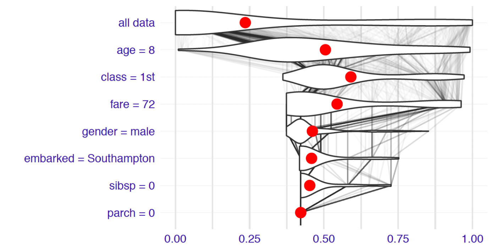
- In fact, we are not interested in the distributions of conditional predictions, only in the expected value of these distributions. This is what our value function is.

- The added value of variable \(j\) when added to the coalition \(S\) is the change in expected value. In the example below, adding the
class variable to a coalition with the age variable increases the reward by \(0.086\).
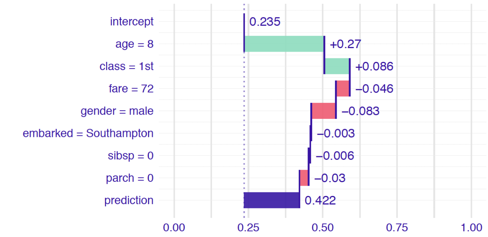
Average of conditional contributions
- The Shapley value is the average after all (or a large number) of the orders in which variables are added to the coalition.
- For diagnostic purposes, on graphs, we can also highlight the distribution of added values for different coalitions to get information on how much the effect of a given variable is additive, i.e. leads to the same added value regardless of the previous composition of the coalition.

- Order matters. For a model that allows interactions, it is easy to find an example of a non-additive effect of a variable. How to explain the different effects of the age variable in the figure below?

SHAP values
\[
\phi_j = \frac{1}{|P|!} \sum_{\pi \in \Pi} v(S_j^\pi \cup \{j\}) - v(S_j^\pi)
\]
- The \(v(S \cup \{j\}) - v(S)\) may be approximated with \(\hat f_{S \cup \{j\}}(x^*) - \hat f_S(x^*)\) where
\[
\hat f_S(x^*) = \sum_{i=1}^N f(x^*_S, x^i_{-S})
\]
- The exact calculation of Shapley values leads to the formula
\[
\phi_j(x^*) = \frac{1}{N |P|!} \sum_{\pi \in \Pi} \sum_{i=1}^{N} f(x^*_{S^\pi \cup \{j\}}, x^i_{-S^\pi \cup \{j\}}) - f(x^*_{S^\pi}, x^i_{-S^\pi})
\]
- Note: For estimation, one can use an only subset of permutations from \(\Pi\) and a subset of observations \(\{1, ..., N\}\).
Kernel SHAP
- Accurate calculation of Shapley values is a very time-consuming task.
- The Kernel-SHAP method makes it possible to estimate these values at a lower computational cost - and thus faster.
- You can think of it as an adaptation of the LIME method. The explanation, too, is a linear model approximation of the model in an interpretable feature space.
- The interpretable variable space is a binary space describing whether a variable enters a coalition or not. If it enters the coalition then we use the value of this variable from the observation being explained. If it doesn’t then we sample a value from the dataset in its place.
- We compute Shapley values by weighted linear regression using an interpretable representation of the variables as input. Linear regression coefficients are estimates of Shapley values.
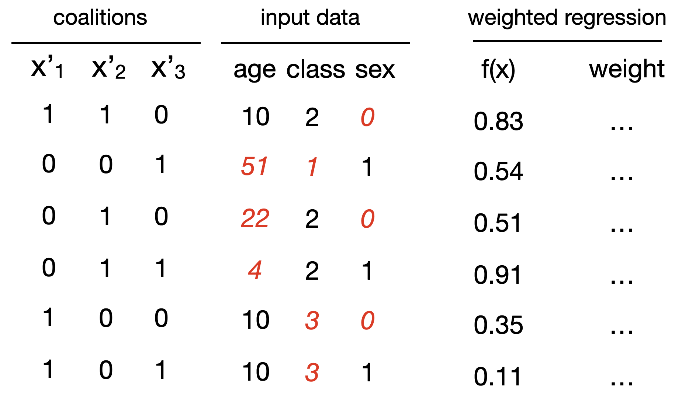
Tree SHAP
Trees have nice structure, it makes them easier to analyse with Shapley values.
For a model that is a weighted sum of trees (bagging, boosting, random forest) the Shapley values for the model are weighted Shapley values for each tree.
Let’s consider a brute force algorithm for a single tree (processing from leaves to the root):
- for a leaf, it returns the value in the leaf,
- for a node with a variable from S it returns the value of a left or right node given the variable’s value,
- for a node without a variable from S it returns the weighted average of the left and right nodes.
The brute force algorithm has complexity \(O(2^m)\)
but one can go down to \(O(XTLD^2) = O(TLD \cdot XD)\)
Tree SHAP - an example
- Let’s calculate \(val(S)\) for
x = (age: 5, fare:20, sibsp:2).
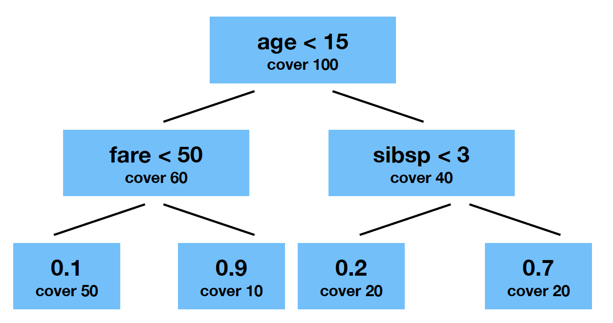
\[
v(S) = \int_{X_{-S}} f(x_S, X_{-S}) dP(X_{-S}) - E f(x)
\]
From local to global – Feature importance
- The SHAP method gives local explanations, i.e. explanations for each single observation. But we can convert them to global explanations by aggregating the explanations for individual observations.
- For example, we can assess the validity of a variable by counting the average modulus of SHAP explanations.
- Such a measure of the importance of variables does not depend on the model structure and can be used to compare models.
- Below is an example for the model trained for Titanic data
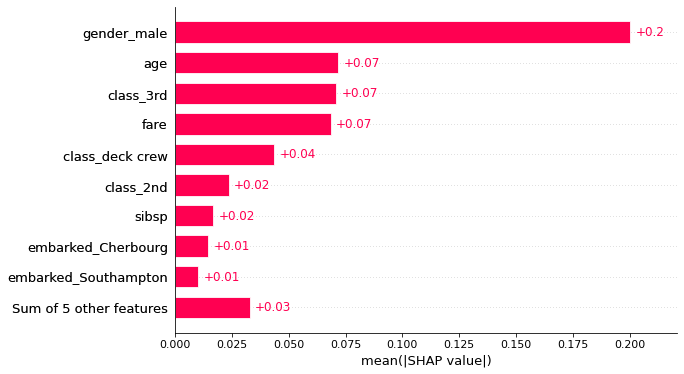
From local to global – Summary plot
- One of the most useful statistics is a plot summarizing the distribution of Shapley values for the data for each variable.
- On the OX axis are presented the Shapley values, in the rows are the variables. The color indicates whether an observation had a high or low value in that variable.
- From the graph you can read which variables are important (they have a large spread of points)
- You can read what is the relationship between the variable and the Shapley value, whether the color has a monotonic gradation or there are some dependencies
- You can read the distribution of Shapley values

From local to global – Dependence plot
- If we plot the Shapley values as functions of the value of the original variable, it is possible to see what kind of relationship exists between this variable and the average result.
- This type of plots allows you to choose the transformations of the variable, and better understand the relationship between this variable and the result of the model
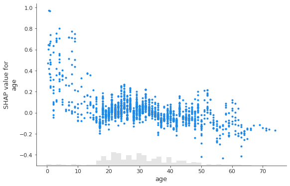
- We can additionally color the graph depending on one more variable (in the example below, it is gender) to see if an interaction is present in the model. In this case, the attributes of the model will depend on the value of this additional variable.

LIME - Local Interpretable Model-agnostic Explanations
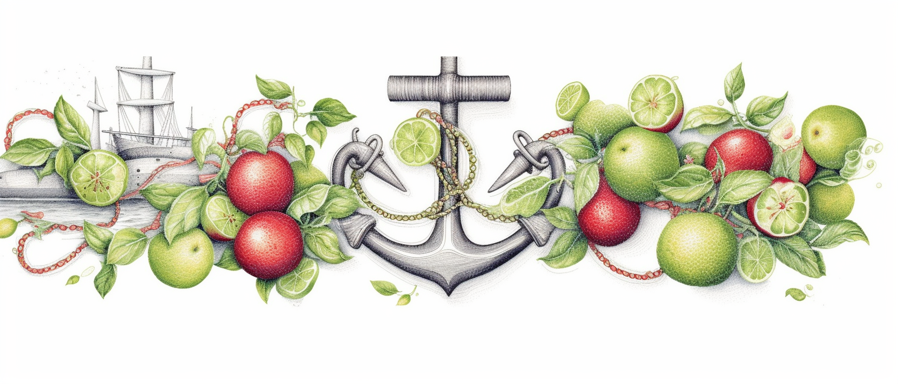
Start with Why
Desired characteristics of explanations (from LIME paper)
- Explanations should be easy to undestand = interpretable (simple, sparse, based on interpretable features) for a user
- Good explanation should be model-agnostic, i.e. does not depend on model structure. This will help to compare explanations for different models
- Local fidelity of explanations
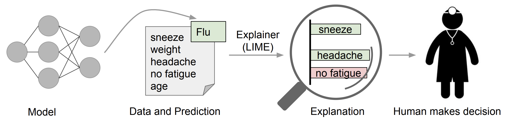
Explanation process. Figure from LIME paper
Core idea
The core ideas behind LIME are:
- Input to the model will be transformed into an interpretable feature space
- Local model behaviour will be explained by approximating it by an interpretable surrogate model (e.g. a shallow tree or a linear regression model)
- Local approximation is trained on artificial points generated from the neighborhood of the observation of interest \(x\)
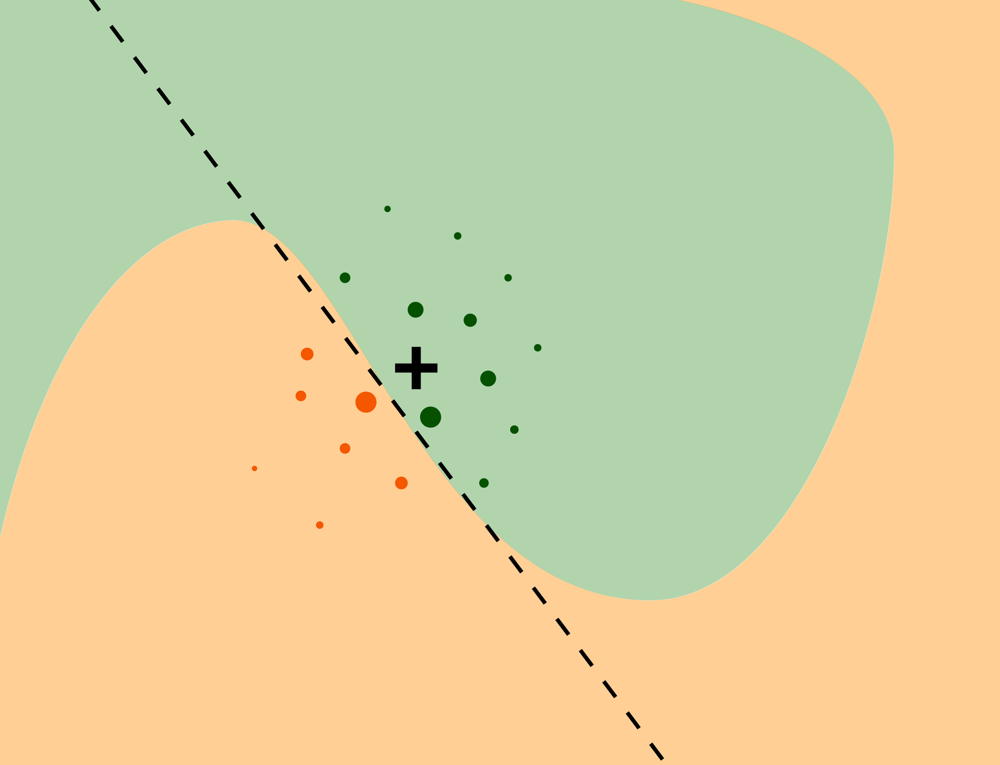
Figure from EMA book
Fidelity-Interpretability Trade-off
The explanation will be a model \(g\) that approximates the behavior of the complex model \(f\) and is as simple as possible
\[
\hat g = \arg \min_{g \in G} L\{f, g, \pi(x)\} + \Omega(g)
\]
where
- \(f()\) is a model to be explained
- \(x\) is an observation of interest
- \(G\) is a class of interpretable models
- \(\hat g\) is an explanation, a model from class \(G\)
- \(\Omega(g)\) is a penalty function that measures complexity of models from \(G\). For regression models it could be the number of non-zero coefficients, for trees the number of nodes. For simplicity, we will consider a family of models \(G\) such that all models in this family have complexity \(K\)
- \(L()\) a function measuring the discrepancy between models \(f\) and \(g\) in the neighborhood \(\pi(x^*)\)
LIME Algorithm
Explanations can be calculated with a following instructions.
- Let \(x'\) = \(h\)(x) be a version of \(x\) in the interpretable data space
- for i in 1…N {
- z’[i] =
sample_around(x’)
- y’[i] = \(f\)(z’[i])
- w’[i] =
similarity(x’, z’[i])
- }
- return
K-LASSO(y’, x’, w’)
where
- \(x\) – an observation to be explained
- \(N\) – sample size needed to fit a glass-box model
- \(K\) – complexity, the maximum number of variables in the glass-box model
similarity – a distance function in the original data spaceK-LASSO – a weighted LASSO linear-regression model that selects K variables- w’ – weights that measure of the similarity between original observation \(x\) and new artificially generated observations. Weights may be based on \(\exp(-d)\) function, where \(d\) is an Euclidean distance, cosine distance or other distance measure (depending on the data structure),
Example: Duck or horse? 1/4
Let’s see how LIME can be used to solve this problem.
Initial settings
- Let’s consider a VGG16 neural network trained on the ImageNet data
- Input size are images 244 \(\times\) 244 pixels. We have 1000 potential categories for the training data
- The input space is of dimension 3 \(\times\) 244 \(\times\) 244, i.e. it is a 178 608-dimensional space
- We need to translate the input to the interpretable data space, here image will be transformed into superpixels, which are treated as binary features (see an example later)
- In this example \(f()\) operates on space with \(178 608\) dimensions, while the glass-box model \(g()\) operates on a binary space with \(100\) dimensions
- We will ask for explanations of complexity 10
Example: Duck or horse? 2/4
Interpretable data space
- Interpretable data space is a binary space that encodes presence or absence of selected features
- The interpretable space can be constructed globally (e.g. for tabular data) or locally (e.g. for images)
- For image data, the most common approach constructs an interpretable data space for each observation separately by using a segmentation algorithm.
- The result is the division of the input image into a certain number of regions/called superpixels

Example: Duck or horse? 3/4
Sampling around x
- We sample around the observation x’ in the interpretable space
- Since it’s a binary space in which an observation \(x\) is represented by a vector of ones
- Sampling corresponds to selecting randomly coordinates that will be flipped to zero
- We need N of such new observations

Example: Duck or horse? 4/4
Fitting of an interpretable model
- For new data, we make predictions with model \(f()\)
- And then for the observations in the interpretable representation we train a K-LASSO model which will have \(K\) non-zero coefficients
- We can use the \(R^2\) coefficient to assess the quality of fit of the model \(g()\)
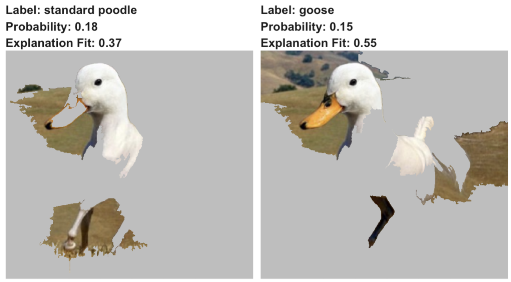
Interpretable data representations
How to transform the input data into a binary vector of shorter length?
- For image data interpretable feature space is commonly based on superpixels, i.e. through image segmentation
- For text data, words or groups of words are frequently used as interpretable variables
- For tabular data, continuous variables are often discretized to obtain interpretable bianary variables. In the case of categorical variables, combination of levels is used to get bianary variables.
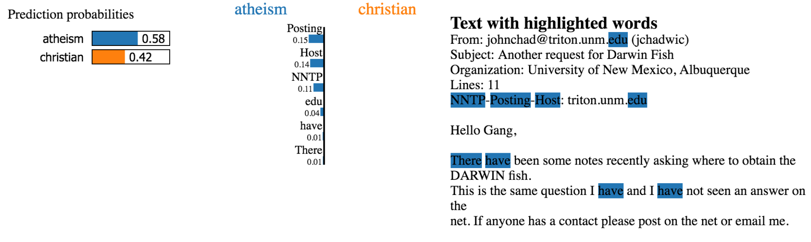
Example from LIME github
Model debugging 1/3
- There are many reasons to know and develop XAI techniques
- One of them is the ability to debug the model
- The most well-known example is improving the performance of a network that misclassified the following image
- How LIME can help here?
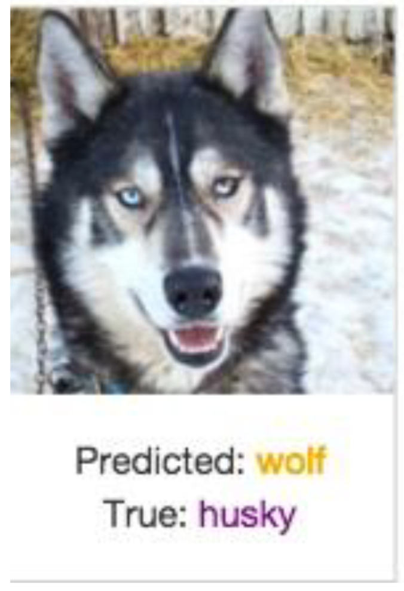
Figure from presentation about LIME by Sameer Singh
Model debugging 2/3
- The model works very well. Classification between husky of wolf in accurate in almost every image except one. Why?
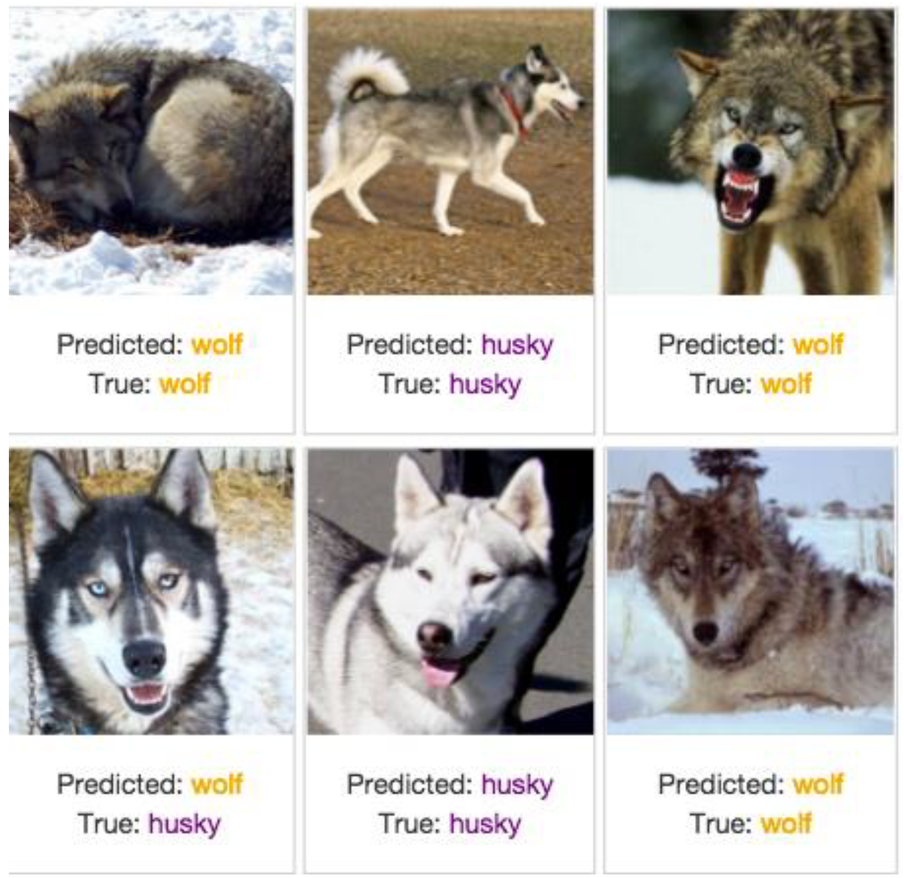
Figure from presentation about LIME by Sameer Singh
Model debugging 3/3
- Can LIME’s explanation help us find the source of the problem?
- It turns out that in the case of classification as a wolf, the important feature is the snow in the background
- Effectively, the model has learned to recognize snow in the background and so classifies as a wolf class
- This is not a feature that people use for classification wolf/husky. But would you sacrifice the quality of the model to remove the dependence on using the background for classification?
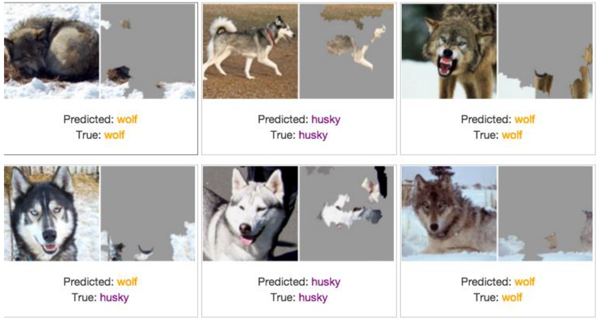
Figure from presentation about LIME by Sameer Singh
- This story has a happy ending. Proper training that cancelled the model dependency on the snow feature improved the accuracy of the model
Explaining through examples
The LIME method was designed to explain the model’s behavior locally, around the observation of interest. But we are often interested in knowing or at least getting an intuition about how the model works globally.
The LIME paper proposes two approaches to globalizing LIME. Both are based on selecting some subset of observations that will be fairly representative of the entire dataset. Assuming the user has time to look at LIME explanations for B observations, the question is how to select them.
Submodular pick (SP) algorithm
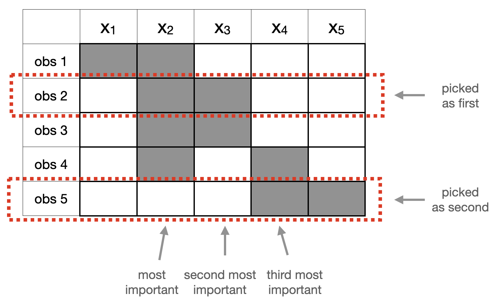
Criterion for selecting observations for global explanations
\[
c(V, W, I) = \sum_{j \in P'} 1_{\exists i\in V; W_{i,j} \neq 0} I_j
\]
where \(I_j\) is feature importance for feature \(i\) while \(P'\) is a set of features in an interpretable data space.
The LIME paper presents a user-study example where the submodular picks method most effectively convinces the user how the model works.
Can non-experts improve a classifier?
- The LIME paper describes the results of several experiments involving humans subjects
- Very interesting results involved using explanations to improve the model, even if the improvement is generated by the knowledge and actions of non-ML-experts
- The experiment was based on a model for a classification task based on text data
- The explanations of the model generated by the LIME method were then shown to the participants of the experiment. That is, for each observation, the relevant words were highlighted
- Participants could determine that some of these words were artifacts and should not be used by the model
- The model was then trained again on the remaining features, with the artifacts removed
- It turns out that such feature engineering using experts led to better results after several rounds
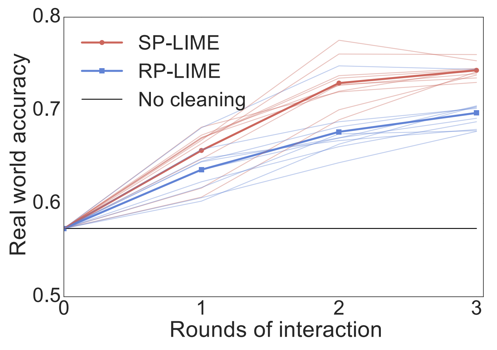
Figure from the LIME paper